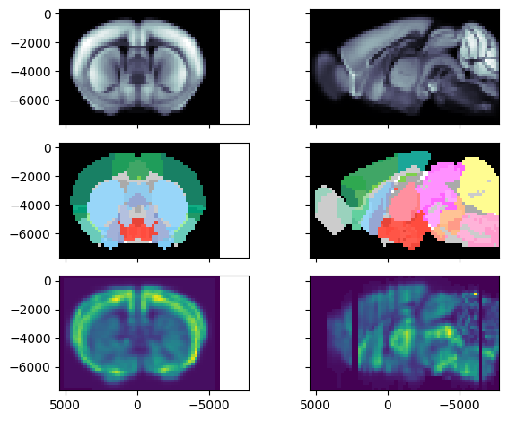

Loading the gene expression atlas
This will download a formatted version of the agea gene expression matrix and load the following variables:
df_genes: is a dataframe containing the genes names (size 4345)gene_expression_volumes: is a 4D array of gene expression volumes, shape (ngenes, ML, DV, AP) = (4345, 58, 41, 67)atlas_agea: is aiblatlas.atlas.BrainAtlasobject with a geometry and anatomical labels matching the geometry of the AGEA volumes.
[1]:
import matplotlib.pyplot as plt
from iblatlas.genomics import agea
df_genes, gene_expression_volumes, atlas_agea = agea.load()
To demonstrate how to using the atlas object, we will display registered coronal and a sagittal slices from the first gene.
The top row is the diffusion MRI Allen template, the middle row corresponds to the brain regions annotations and the bottom row corresponds to the first gene expression volume.
[2]:
igenes = (0,)
fig, axs = plt.subplots(3, 2, sharex=True, sharey=True)
atlas_agea.plot_cslice(0, ax=axs[0, 0])
atlas_agea.plot_cslice(0, ax=axs[1, 0], volume='annotation')
atlas_agea.plot_cslice(0, ax=axs[2, 0], volume=gene_expression_volumes[igenes[0]], cmap='viridis')
atlas_agea.plot_sslice(0, ax=axs[0, 1])
atlas_agea.plot_sslice(0, ax=axs[1, 1], volume='annotation')
atlas_agea.plot_sslice(0, ax=axs[2, 1], volume=gene_expression_volumes[igenes[0]], cmap='viridis')
fig.tight_layout()
